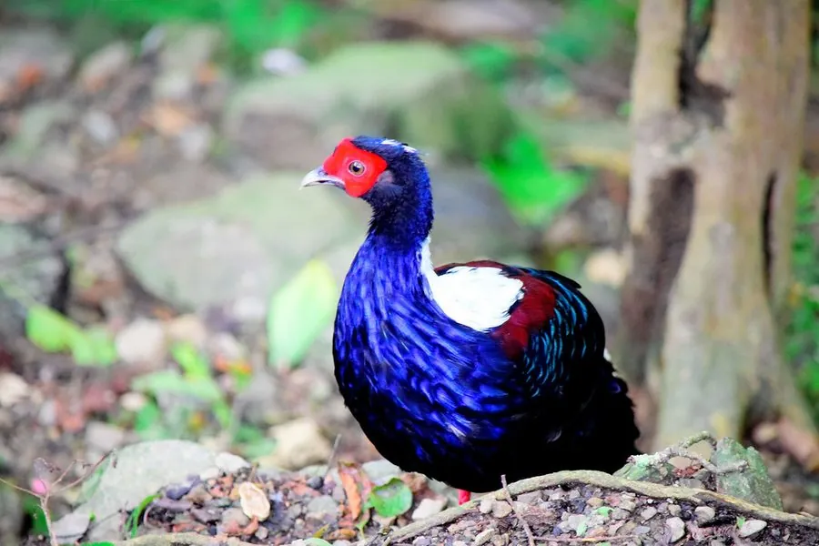

鸟类 · 动物界
蓝鹇 Lophura swinhoii

台湾特有雉类，雄鸟体羽深蓝黑带金属光泽，头顶白色冠羽，脸部鲜红，栖于中低海拔原始阔叶林，由斯文豪命名。
- 分类
- 门脊索动物门纲鸟纲目鸡形目科雉科属鹇属
- 栖息环境
- 台湾海拔 200–2300 m 的原始阔叶林与针阔混交林，喜林下植被茂密处
- 地理分布
- 中国台湾本岛的中低海拔山区，为台湾特有种
- 保护级别
- IUCN 无危（LC）；中国国家一级保护动物
物种志
蓝鹇雄鸟连尾体长约 79 cm，体重约 1–1.3 kg；雌鸟约 50 cm，体重约 0.8 kg。雄鸟体羽深蓝黑色，具强烈金属光泽，头顶与后颈为白色，脸部裸皮鲜红，肩羽暗红，中央尾羽白色；雌鸟通体橄榄褐色，密布细纹，尾羽较短。
蓝鹇是台湾特有种，栖息于海拔 200–2300 m 的原始阔叶林与针阔混交林，偏好林下植被茂密、坡度较缓的谷地。它们在地面觅食，食物包括果实、种子、嫩芽、昆虫和蚯蚓，晨昏活动最频繁，夜间栖于树上。繁殖期在 3–5 月，雄鸟在雌鸟周围振翅、竖尾炫耀；每窝产卵 5–8 枚，由雌鸟孵化约 25 天。由于低海拔森林开发与猎捕，其种群一度锐减，现受相关法规严格保护。
形态与习性
- 食性果实、种子、嫩芽、昆虫和蚯蚓
- 体长雄鸟约 79 cm，雌鸟约 50 cm
- 体重雄鸟 1–1.3 kg，雌鸟约 0.8 kg
- 海拔200–2300 m 的山地森林
- 繁殖3–5 月，每窝 5–8 枚，孵化约 25 天
- 保护中国国家一级保护动物
趣味知识
- 蓝鹇由英国博物学家斯文豪在 19 世纪命名，是台湾特有种。
- 雄鸟头顶一大片白色冠羽，在深蓝色体羽衬托下非常显眼。
- 它们夜间飞到树上栖息，这一点与许多地栖雉类不同。